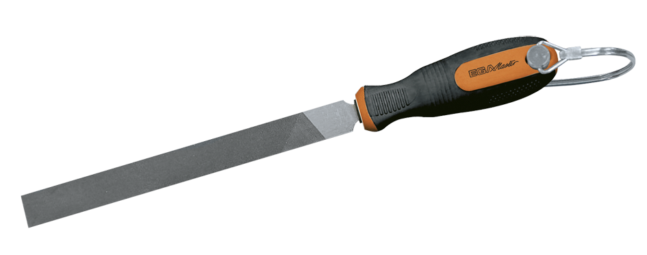
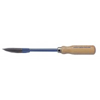
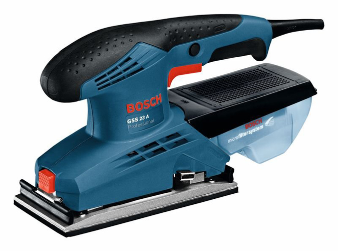
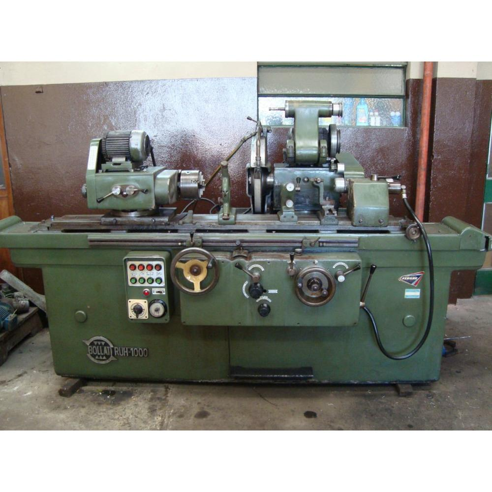
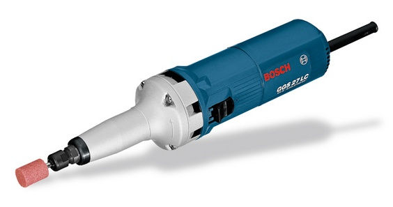

La Madera y sus derivados
Desbastado y afinado
Técnica utilizada para corregir los pequeños defectos que puedan queda tras el mecanizado eliminando material sobrante.
|
Nombre |
Función |
Foto |
|
Lima |
Herramienta manual con una pieza metálica estriada y un mango que sirve para quitar material sobrante dando un buen acabado. |
 |
|
Rasqueta |
Se emplea para arrancar pequeñas virutas tras el mecanizado. |
 |
|
Lijadora |
Maquine eléctrica con un material abrasivo para lijar la pieza, es como una lima pero a gran velocidad. |
 |
|
Rectificadora |
Máquina eléctrica de precisión para arrancar material para ajustar la pieza a las medidas deseadas tras su mecanizado. Tiene un disco abrasivo llamado "muela". |
  |
Obra publicada con Licencia Creative Commons Reconocimiento No comercial 4.0